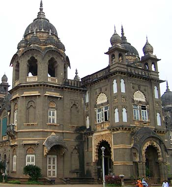
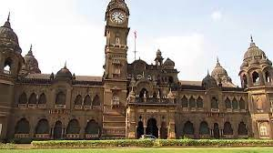
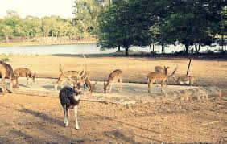

New Palace
  
New Palace, Kolhapur is a palace situated in Kolhapur, in the Indian state of Maharashtra. The Palace took 7 years to complete,
from 1877 to 1884,[1] costing about seven lakhs of rupees.[2] Being an excellent specimen of Indian architecture built in black
polished stone, it has been an attraction for tourists. It has extensive premises with a garden, fountain and wrestling ground.
The whole building is eight-angled and has a tower in the middle. The clock on it was fixed in 1877. At separate distances there
are small towers. On every glass are painted the events in Chhatrapati Shivaji Maharaj's life, the founder of Maratha Empire.
There is a zoo and a ground lake.
Even today, it is the residence of Chhatrapati Shahu Maharaja, the direct descendant of Chhatrapati Shivaji Maharaja.
Video Link
Direction to the New Palace